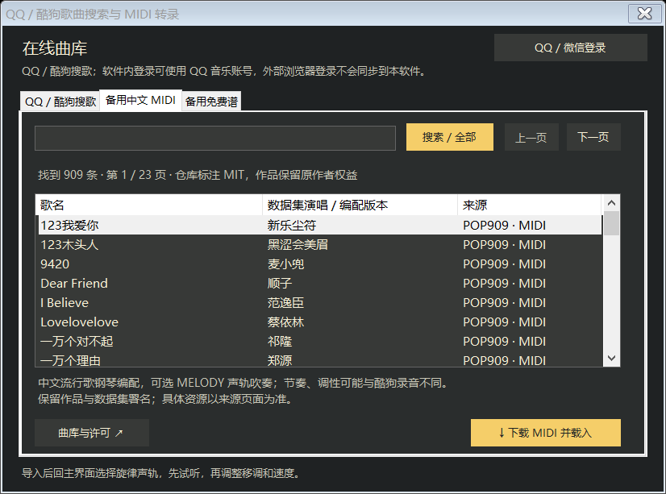
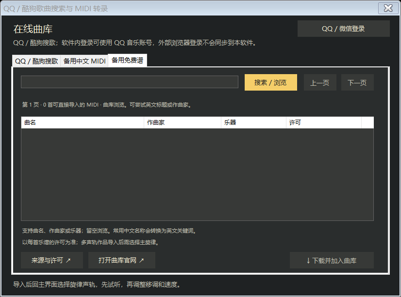
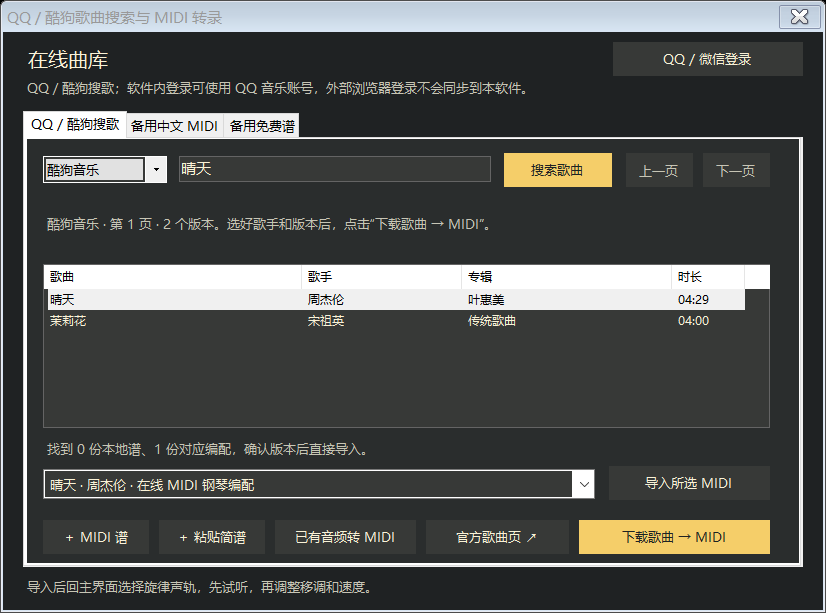
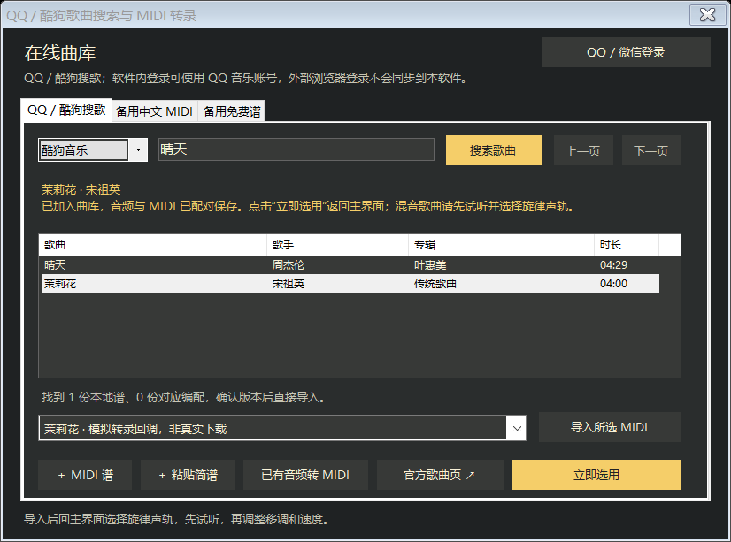

歌曲与在线谱库
QQ／酷狗搜歌，优先选主旋律谱
在线曲库默认打开“QQ / 酷狗搜歌”；中文 MIDI 第二，备用免费谱最后。搜索并确认版本后，同页下方优先提供主旋律 MIDI 编配，录音估计另点“下载录音 → MIDI”。谱失败不会暗中改为转录；已有曲目可右键查找主旋律谱并保留原谱。QQ／微信登录仍在软件内官方页完成；本轮结果与既有历史分别记录。
版本 1.8.1.0 · 更新日期：
本页图片均为既有旧版本或模拟操作图，按钮和布局位置可能与新版不同；不是当前联网、转录或窗口渲染实测，详见文档验证记录。
搜歌后，同页优先选主旋律 MIDI
- 在“QQ / 酷狗搜歌”选择来源，输入歌名或歌手并搜索，选中需要的歌曲版本。
- 查看下方乐谱候选。歌名、歌手明确匹配且没有不同录音版本提示的 POP909 编配，会推荐“选用主旋律 MIDI”；双击歌曲也优先采用当前已选候选，不要求再跳到备用谱库页。
- 遇到“非所选Live原谱”、不同歌手或歌手待确认时，程序不会自动替换；明确选择候选再点“采用此编配 MIDI”。已有本地谱可能显示“选用所选 MIDI”，也须核对版本。
- 下载的推荐谱须有可用 MELODY 主旋律轨，校验成功才写入曲库。失败时保留当前选择并提示重试；不会隐式下载音频或开始转录。要改用录音估计，请明确点独立的“下载录音 → MIDI”。
- 回主界面先“离线试听”。吹奏下拉标为“主旋律”，只提供有音符的明确主旋律角色；没有角色标记的未知 MIDI 最多提供一条有单音连续性依据、标为不确定的旋律候选。鼓、低音和明确伴奏不作为吹奏选项；PIANO、BRIDGE 仍在全轨瀑布背景中。没有可解释单音候选的文件拒绝载入，可能是伴奏、鼓点或复音编配，不将拒载一律判成伴奏。
“主旋律编配”不等于所选录音的精准原谱。POP909 是钢琴编配，可能有不同的调性、节奏与段落；Live 或翻唱尤其要先核对。可信候选指来源、歌名、歌手和主旋律角色可核对，不是人工听音或游戏效果认证；未知候选也不等于已识别人声。
已有曲目可在主窗右键“查找主旋律谱（保留原谱）”进入同页查找。原曲目与 MIDI 不覆盖；找到现成编配后加入或复用有效谱。没有对应谱时，不会凭歌名编造音符。查看低音与碎音的处理步骤。
POP909：备用中文流行歌 MIDI
标题、歌手与编号来自 Music X Lab 的 POP909 官方数据集，本地仅保存 909 条元数据。每首真实 MIDI 按需从原仓库下载，包含 MELODY、BRIDGE、PIANO 等旋律与伴奏轨；编配不等同于 QQ／酷狗所选录音的转录。
- 打开在线曲库，切换“备用中文 MIDI”。
- 输入歌名或歌手，点击“搜索 / 全部”；空词可浏览全部条目。每页最多 40 项。
- 确认“数据集演唱 / 编配版本”。例如《七里香》的索引歌手为刘瑞琦，不应当作周杰伦原唱同版。
- 选中条目后点击“下载 MIDI 并载入”。程序下载、校验后加入本地曲库，保留编号、歌手、来源、许可与署名。
- 回到主界面先选 MELODY，试听并调整速度与移调；点击标题栏“参考谱面”，可在大瀑布里看主旋律和背景轨。金色主旋律用于演奏，背景彩色细条用于观察。查看完整读谱与指法。
下载使用官方仓库原始文件地址，并有 GitHub API 备用路径；只有验证为有效 MIDI 的文件才加入曲库并缓存。缓存通过校验后可复用，网页或错误响应不会当成 MIDI。备用路径不表示原始地址已经失效。
索引包括《晴天》《夜曲》《七里香》等，当前未找到《稻香》《青花瓷》。编配节奏、音高或段落可能与选中的录音不同，须先试听确认。

Mutopia：直接下载免费 MIDI
Mutopia 官方首页在 2026 年 10 月 1 日查证时显示 2124 首作品。这个数字是网站目录规模，不代表全部都有直接单文件 MIDI，也不代表每首都适合口琴。
- 打开在线曲库，切换“备用免费谱”页。
- 按标题、作者或乐器搜索。程序会转换部分常见中文关键词；找不到时尝试原文，例如
Jingle Bells、Beethoven或Flute。 - 每页最多显示 10 项，跳过多文件包后可能少于 10 项，可翻页继续选谱。先看作品名、作曲者、来源与许可，选择你需要的版本。
- 有直接 MIDI 资源的作品，点击“下载并加入曲库”。成功后保存在本地，下次无需重复下载。
- 回到主界面选择旋律声轨，点“离线试听”。多声部作品可能混有伴奏，先选轨，再调整速度和移调；出现“超域”时应调整音高或换谱。
某些作品把多个声部 MIDI 打包成 ZIP。程序会跳过 ZIP 条目，并提示这类多文件包的数量；点击通用的“打开曲库官网”，可在官网重新检索并按作品许可下载，解压后使用“导入 MIDI”批量导入里面的文件。不要把 ZIP、PDF 或网页文件改扩展名当成 MIDI。

需要录音估计时：独立下载，再本机转 MIDI
- 打开“QQ / 酷狗搜歌”，首行选QQ音乐或酷狗音乐，默认 QQ。输入歌名或歌手，点“搜索歌曲”；切换来源后重新搜索。
- 确认歌曲、歌手、专辑和版本，先查看主旋律谱。确实要从录音估计时，再点“下载录音 → MIDI”。同页显示音频确认、下载、组件检查及自动补齐、转录和保存，不弹第二个音频设置窗，也不要求填 URL。
- 成功后点“立即选用”。录音与 MIDI 已在
程序文件/曲目/配对保存并写入曲库；列表及数量立即刷新，新曲成为当前选择。返回主界面选主旋律、先试听，再打开参考谱面。 - 未提供直接下载时：同页说明该版本受限或没有普通地址，可换版本或从官方客户端取得普通音频。QQ 可先用软件内登录入口完成官方 QQ／微信登录，按实际账号权限重试；“官方歌曲页 ↗”仍仅打开外部详情，不自动同步外部会话。已有普通本机文件可点同页“已有音频转 MIDI”，转录与保存仍在这一页进行。
- 处理期间可“取消下载 / 转录”；已下载音频保留，失败或取消后用“重试转 MIDI”继续，不重复下载已经取得的录音。缺少普通音频时不会把搜索结果或错误页面假装成 MIDI。
- 已有谱按下方候选独立选用；歌手和编配须核对，Live 不当作该录音原谱。本地 MIDI 直接载入，在线主旋律谱校验后写库；自己的文件仍可用“＋ MIDI 谱”、“＋ 粘贴简谱”。谱下载失败不自动转录，两个操作互不代替。
- 试听后可用“片段时长”截段或循环；手动、自动、试听与导出共用同一计划。默认自然播放到所选主旋律末音结束，背景轨随该周期裁齐，不拖到伴奏尾部；主动片段、循环、目标时长与正常长休止保留。查看实际时长设置 · 查看音域与尾部选项。
26 首内置主题是短片段，不是全曲长度限制。不会把所有歌曲截为 40 个音符；已有完整 MIDI 按真实内容载入。没有谱时也不会凭歌名编造音符，音频转录必须取得真实普通录音并试听修正。
谱载入后点标题栏“参考谱面”，可切成暖灰半透明的大瀑布。左侧常驻六种鼠标组合与八键，右侧显示多轨音符，判定线下仅保留音级数字和进度，不重复说明。完整和迷你将图例、文字与谱面按同一比例缩放，必要时留白。音符底端到线时起音，长条按住到尾端经过；实际演奏只用所选主旋律。查看按法与长音示例。
连续旋律转录仍是估计。多乐器音高支持概率不能区分主唱身份，持续低音或伴奏可能被选中。新版只有更连贯、具有起音和音高变化证据的音区候选满足严格条件才采用，仍可能混入伴奏；明确起音支持的至少 40 毫秒短音可保留，证据不足的短段可能留下间隙，并提示“短音未定”。“候选需核对”“需试听”等质量提示保留在 MIDI 内，不能当作准确度评分。已有配对录音可右键“重新转录已有音频（保留原谱）”比较两版，但不保证听感改善。查看重新转录步骤。
QQ 未登录时可尝试平台提供的普通完整音频；软件内登录后按实际账号权限处理，状态失效时提示重新登录。酷狗核对权限、歌曲标识、时长和普通完整 MP3 地址，受限或片段地址不取。软件不解密 QMC／MGG／MFLAC／KGM，也不保证所有会员版本有可转录音频。下载限 128 MB／120 秒，转录限 10 分钟／128 MB。查看同页操作。
歌曲页采用平台网页接口，非正式合作 API，也不是免费 MIDI 接口；QQ 支持软件内官方页登录，酷狗保持匿名方式。服务可能因网络、区域或站点调整不可用。QQ 官方客户端下载 · 酷狗官方客户端下载 · QQ 官方用户协议。


QQ／微信登录：在软件里的官方页面完成
- 打开“QQ / 酷狗搜歌”，将来源选为 QQ 音乐，点右上角“QQ / 微信登录”。登录窗口标题为“QQ 音乐 · 软件内官方登录”。已有保存会话但尚未重新确认时，入口显示“确认 QQ 音乐账号”，点击完成确认。
- 等待官方页面显示，点窗口下方“打开官方登录”，或直接点击官方网页自己的登录入口；在原有登录面板选择 QQ 或微信，由你完成扫码或账号验证。窗口顶部说明“在 QQ 音乐官方页面登录 QQ 或微信”；软件不替你填写密码或执行账号确认。
- 完成官方登录后点“使用此账号”返回歌曲列表；平台确认成功后，入口变为“QQ 音乐账号 / 退出”。确认所选版本，再点“下载歌曲 → MIDI”；下载使用此次会话向平台请求实际授权的普通完整音频。会话失效时重新登录；页面没有正确打开时，可点“重新打开官方页”。
- 需要切换账号时，从“QQ 音乐账号 / 退出”打开账号窗口并点“退出登录”。它清除本软件保存的账号会话与专属网页 Cookie／浏览资料；当场无法清理时会标记，在下次打开时补清。不会清除其他浏览器的登录。退出后重新打开此窗口登录新的账号。
版本 1.8.1：默认完整 C# 检查 25 组、7030 项独立断言通过，未重跑真实账号网络确认。本机输入桌面已恢复可访问，本轮原生热键与跨 UI 线程鼠标穿透检查均包含在完整结果中，退出码 0；不是仅复用版本 1.8.0 的局部检查。保留软件内官方登录与专属会话；主旋律选谱、移调及模拟流程检查不能替代真实扫码或会员下载。关闭主窗口释放所属登录控件并保留资料。查看本轮完整结果 · 查看 1.8.0 历史 6267 项的范围。
版本 1.7.5 历史：未重跑真实账号网络确认。当时整套 24 类 4888 项断言通过，其中 QQ 专项 163、在线选谱窗口 76、同页配谱 690、打包 27、安装与进程生命周期 136 是程序回归检查，不能代替扫码或真实账号下载。查看版本 1.7.5 验证记录。
版本 1.7.2 历史：现有微信会话的产品默认账号确认通过。读取本软件用户已有的微信官方网页登录会话后，默认 ValidateAccount 的真实网络验证返回 True，IsUsable=True，失败分类为空；采用网页相同 User-Agent 的诊断传输也通过。账号接口带会话时返回成功与去标识化资料，移除会话后返回账号错误，官方网页资料接口对照也有区别；修复了旧版对会话格式与数字账号标识的误拒。该版全套 22 类 4669 项断言通过，三页构造及实际显示顺序、备用目录按需加载均已核验。
版本 1.7.2 的真实账号验证只覆盖现有微信会话的识别和产品默认确认。没有代用户扫码，没有持久化正式账号会话，也没有退出或清理专属网页资料。真实 QQ 扫码、会员歌曲下载、人工听音与游戏实机未验证；账号可用仍不代表平台会提供每个版本的普通完整音频。
版本 1.7.1 历史检查：2026 年 10 月 3 日，本机 WebView2 初始化、QQ 音乐官方页面加载及触发原有登录控件成功，QQ／微信选项和官方登录页面存在；匿名点“使用此账号”会被拒绝。当时未用真实 QQ／微信账号扫码，未验证会员版本下载；“打开官方登录”、微信切换、最小窗口缩放及专属资料退出清理已检查，QQ 离线权限与会话专项 142 项通过。两平台普通整曲结果不是账号或会员权限证据，不能代替版本 1.7.2 的微信账号确认实测。
官方页用微软 WebView2 控件显示，软件只增加约 0.9 MiB 的 SDK 与加载文件，复用已安装的共享运行时；本机已有运行时 154，不重复安装。缺运行时时，登录窗会显示“安装 WebView2 ↗”，打开微软官网的 Evergreen 运行时安装入口；完成后重新打开登录窗。无需为普通 MIDI 跟谱安装它，匿名搜歌仍保留。查看微软来源与许可。
哪些内容可以直接导入
下载的普通音频和生成的 MIDI 统一存入 程序文件/曲目/，新转录配对文件采用相同前缀。现有 MIDI、旧下载音频与内置主题的 MIDI 也整理到这里；仅搜索到的在线元数据不会自动下载全部歌曲。配对录音可重新转录并保留原谱；删除曲目默认保留文件，可单独确认删除软件目录内的独占文件。查看文件管理 · 查看删除与恢复。
| 内容 | 当前支持方式 |
|---|---|
单文件 .mid、.midi | 直接导入；POP909 或 Mutopia 有对应资源的作品可按需下载，不设统一 40 音符上限。 |
| 文本简谱 | 新建校验保存，按真实音符生成标准 MIDI；主界面可导出当前播放计划。查看输入方式。 |
| 普通 MP3／WAV／FLAC／OGG | QQ／酷狗实际提供的普通完整音频可同页下载转录；已有本机文件通过同页“已有音频转 MIDI”选择。下载限 128 MB／120 秒，转录限 10 分钟／128 MB，须试听修正。 |
| QMC／MGG／MFLAC／KGM 等受保护音频 | 不能直接转录，不解密或绕过限制；改扩展名也无效。 |
| 多个 MIDI | 导入窗口最多选择 100 个文件；相同内容复用，单个失败不撤销其他成功项。 |
| ZIP 多文件包 | Mutopia 搜索时跳过并提示数量；用“打开曲库官网”下载解压后批量导入 MIDI。 |
| PDF、图片谱、网页 | 当前不能直接识谱；先取得 MIDI 或转写文本简谱。 |
MIDI 格式与时长限制、旋律声轨选择、移调和多声部归约规则，详见使用指南。
作品许可与本地来源记录
在线下载的谱会随曲库保存来源网页、版本、许可、许可证链接与署名。主界面“乐谱来源↗”在外部来源有效时可点击，旁边显示许可；鼠标悬停可查看实际维护者署名、来源版本说明与许可证网址。信息保存在 程序文件/data/library.json，复制程序文件可一并迁移。
POP909 显示“仓库标注 MIT”。原仓库许可版权署名为 Music X Lab (2020)，完整文本保存在 POP909-LICENSE。仓库许可不等于将现代歌曲原作、歌词或商业录音变成公版；软件保留歌手与数据集署名，不将这些曲目统一标记为 Public Domain。
- Public Domain：该贡献按公版标记提供，仍应核对作品页和你所在地适用范围。
- CC BY：使用或分发时保留作者与相应许可信息。
- CC BY-SA：除署名外，修改后分发作品还需遵循相同许可。
条款依据：Mutopia 官方许可说明。自行从其他网站下载的谱，以该谱作者或网站给出的授权为准；“可以试听”不能自动推导为“允许复制或重新分发乐谱”。
真实联网与历史验证
2026 年 10 月 5 日：官方 POP909《父亲》已实际下载、校验并加入当前曲库。编号 622，歌手筷子兄弟；11912 字节，3 个输出声轨。默认 MELODY 425 个音、音高 59–80，中位音高 75；低于基准音 60 的只有 10 个（2.35%），默认整体移调 0、跳过 0。主旋律原始首音在 26.693 秒、末音结束在 253.692 秒，谱面移除开头空拍后跨度约 226.999 秒；345 处正休止间隔共约 71.008 秒保留。原 MIDI 总 EOT 时长约 297.053 秒，包含其他轨，不等于主旋律演奏周期。PIANO 是伴奏，不能把它当唱旋律。此检查确认源谱与入库，不是用户旧《父亲》转录的实测修复，也未人工听音或游戏演奏。
来源：POP909 官方 622.mid；本地名称 父亲-筷子兄弟-POP909-622.mid，SHA256：2563CA3B302B0F3EB341E151FAFCB3AC4657C58781A02F6BF18711E081A8A96C。钢琴编配可能与原录音或 Live 不同；仓库许可与来源信息保留。
版本 1.8.1：Python 连续旋律检查 38 项通过。覆盖至少 40 毫秒且有明确起音证据的短音，以及持续候选的采用／拒绝条件。另用本机实际模型重跑 4.6 秒单声部合成录音，5 个预设音高全部保留，起、结音偏差均小于 50 毫秒，4 段休止保留，单轨无重叠。新 v3 后处理对《奇迹再现》35–47 秒、12 秒缓存仍输出 54 个音、发音总长约 8.342 秒、短音约 59%；加入“短音未定”等提示，未证明听感改善。多乐器支持概率不识别主唱；人工听音、游戏演奏和完整强混音准确度未验证。查看当前结果与边界。
版本 1.8.0 历史：连续后处理合成检查 27 项通过，另核对真实模型的合成录音。合成录音保留 5 个预设音高与 4 段休止，起、结音与录音能量边界偏差小于 50 毫秒。《奇迹再现》35–47 秒的 12 秒缓存混音样本，短于 80 毫秒的音符由 36 个降为 0 个，大于 12 半音的相邻跳动由 47 次降为 6 次，音符数由 92 个变为 54 个；仍有短音偏多提示，比例约 59%。结构改善不等同于主唱准确度，强混音仍须试听。历史短 WAV 和整曲下载分别保留，不重复计为当前结果。查看 1.8.0 音频历史。
版本 1.7.5 历史：复用正式目录模型，用新的自有进程管理路径把同一 4.6 秒合成 WAV 转为 5 音符、136 字节 MIDI，文件 SHA256 与版本 1.7.4 对照相同。当时未重跑首装或平台整曲下载转录；关闭主软件会取消转录并清理自身工作进程，迟到回调不再导入曲库。版本 1.7.4 的空间优化继续保留；下面的短 WAV、QQ／酷狗整曲数值属于版本 1.7.1 历史，不重复计为本轮。查看对应历史记录。
版本 1.7.1 历史：实际程序目录的组件准备与恢复转换。首次准备退出码 0；人为缺少完成标记后，统一转换入口复用有效模型、不重新下载，补齐初始化，再将 4.6 秒自合成单声部 WAV 转为 135 字节、1 轨 5 音符的 MIDI。第二次未再次准备，输出 138 字节，两次均成功，字节差来自标题；安装专项 102 项通过。显隐、托盘及嵌套窗口热键另有隔离检查，实际游戏焦点未验证；版本 1.7.2 的账号确认历史与本轮范围另列于上方。
版本 1.7.1 历史：2026 年 10 月 2 日真实 QQ 普通整曲下载→转录→解析成功。宋祖英《茉莉花》244 秒版下载 3915219 字节，输出 13269 字节有效 MIDI、1 轨 2183 音符，音符末尾 242.434 秒。测试使用平台实际返回的普通完整音频，没有真实账号扫码登录，不是会员或保护格式解密验证。
版本 1.7.1 历史：2026 年 10 月 2 日真实酷狗整曲下载→转录→解析成功。真实搜索《茉莉花》返回 20 项，选择宋祖英 249 秒版本，通过平台权限与普通完整地址检查，下载 3994897 字节；本机 Basic Pitch 输出 13843 字节有效 MIDI、1 轨 2280 音符，解析的音符末尾为 247.811 秒，退出码 0。两平台验证使用同正式程序条件及实际程序目录模型，录音和 MIDI 保存于隔离临时曲目目录；未加入用户真实曲库、未人工听音或在游戏演奏。主窗口写库另有隔离检查，不能合并称为真实歌曲完整入库实测；有效 MIDI 不证明人声旋律识别准确。
版本 1.7 历史记录：临时目录组件安装与短 WAV
修复启动参数和 Windows 长路径整理后，在独立临时目录完成自动准备；4.6 秒自合成单声部 WAV 输出 135 字节 MIDI、1 轨 5 音符，退出码 0，另有离线安装专项 22 项通过。临时目录成功不代表用户实际程序目录已安装；后续正式目录验证已作为版本 1.7.1 历史列于上方，不改写此前记录。
版本 1.5 历史记录：酷狗搜索与部分普通音频头
2026 年 10 月 2 日真实匿名搜索《茉莉花》返回 20 个版本。宋祖英版本的搜索权限检查通过，音频响应返回同一歌曲标识、249 秒及 HTTPS /yp/full/ 普通完整 MP3 地址；sharefs.kugou.com、sharefs.tx.kugou.com 各请求 1024 字节，均得到 206、audio/mpeg 与 ID3 音频头。付费的贝乐虎版本没有可用地址，未获取音频。
版本 1.5 当时没有新增整曲下载或真实完整录音转录。搜索、地址与部分文件头不能证明整曲链路成功，模拟下载与转换也不能代替它；当时首装检查退出 -1，原因未确定。版本 1.7 的修复与当前验证状态单独记录在上方，不改写这段历史。
版本 1.4：QQ 匿名搜索与部分音频头
2026 年 10 月 2 日真实匿名搜索《七里香》《茉莉花》各返回 20 项；宋祖英《茉莉花》取得平台返回的普通音频地址。对两个 QQ 音频域名的少量 Range 请求均得到 206、audio/mpeg 与 ID3 文件头。
没有下载整曲，也没有新增完整混音转录验证。这些结果只证明当时搜索、普通地址解析及部分音频头可访问，不保证每首可下载、地址长期有效或整曲转录准确。界面示意中的模拟结果不计为真实下载证据。
版本 1.2：实际下载与窗口流程
以下查询、下载与音频转录发生于 2026 年 10 月 1 日，保留自版本 1.2。当前程序检查与安装测试状态另见文档首页。
| 查询／作品 | 实际结果 | 来源与边界 |
|---|---|---|
| POP909《晴天》 | 下载 16,536 字节；3 个旋律／伴奏轨，约 267.229 秒；MELODY 轨 394 音符。 | 编号 516，索引歌手周杰伦。 |
| POP909《七里香》 | 下载 15,899 字节；3 个旋律／伴奏轨，约 276.929 秒；MELODY 轨 404 音符。 | 编号 035，索引歌手刘瑞琦，须区分原唱版本。 |
| POP909《夜曲》 | 下载 14,042 字节；3 个旋律／伴奏轨，约 223.626 秒；MELODY 轨 575 音符。 | 编号 292，索引歌手周杰伦。 |
| Mutopia《欢乐颂》 | 下载 2192 字节；2 个旋律轨、238 个音符，约 38 秒。 | 目录 id 528，公版标记，维护者 Peter Chubb。 |
| Mutopia《绿袖子》 | 下载 7312 字节；1 个旋律轨、798 个音符，约 272 秒。 | 目录 id 1730，公版标记，维护者 Allen Garvin。 |
| 酷狗“小星星” | 匿名歌曲查询成功，返回 20 项歌曲信息。 | 歌曲元数据验证，不代表已取得录音或对应 MIDI。 |
以上为真实联网客户端的下载、查询与解析结果，不是示例数据，也不代表全部曲目长期可用。尚未进行游戏实机演奏、人工听音或反作弊兼容性验证。
酷狗 → 中文 MIDI → 本地曲库的实际窗口流程已通过。真实酷狗查询《晴天》返回 20 条，选择周杰伦版本后，空本地曲库显示 1 份匹配的 POP909 MIDI；点击“自动配谱 → MIDI”实际下载并写入隔离曲库，主窗口读取到 MELODY、BRIDGE、PIANO 三轨。该验证未向游戏发送输入。
本机音频转录已用 8 音符、5 种音高的合成样本验证：WAV 输出 193 字节／14 音符，MP3 为 205 字节／16 音符，FLAC 为 189 字节／13 音符，OGG 为 206 字节／16 音符；四种格式均覆盖全部 5 种音高，同时产生额外音符。取消流程亦已验证。这验证了真实音频到 MIDI 流程，不证明完整流行录音能精准还原。
版本 1.3：首次使用音频转换
当时已验证首次自动准备组件 → 继续本机转录 → 加入 MIDI：从没有音频组件的环境自动下载安装，音频样本生成 163 字节、9 音符的有效 MIDI。它是历史验证；之后的组件安装检查首例退出失败，不能将历史成功写成当前整套通过。完整歌曲的听感与准确度仍需试听确认。
搜索与导入问题
QQ／酷狗搜到歌曲，为什么没有对应完整谱？
歌曲信息与 POP909 编配目录规模不同，还需区分歌手和版本。软件不会凭标题编造旋律，也不会把内置短主题当成完整歌；可独立导入完整 MIDI，或明确点“下载录音 → MIDI”取得普通录音后本机估计。谱下载失败不会自动转录。
软件内微信页面已经登录，为什么“使用此账号”还说未登录？
旧版对微信会话格式与官方账号返回的要求不兼容，会误拒已经登录的网页会话。版本 1.7.2 已修正并实测用户现有微信会话的产品默认真实网络确认，当前保留该修复；本轮结果与历史分别列于登录验证节点。更新保留专属会话资料，页面登录成功也不代表平台一定提供该版本的普通完整音频。
外部浏览器已经登录，为什么软件仍不能下载？
外部会话不会自动同步。请在 QQ 音乐歌曲页打开软件内登录入口，在官方页选择 QQ 或微信，由你完成账号确认；会话失效时重新登录。“官方歌曲页 ↗”只打开外部详情。实际下载仍受平台账号权限和可用普通地址限制，不解密保护格式。查看操作与验证状态。
两平台都提示识别组件未准备好怎么办？
新版转换入口会检查实际程序目录并自动补齐缺失组件，已有有效模型会复用。准备失败时同页显示具体的网络、目录权限、磁盘空间、系统策略或运行组件原因，状态区按文字扩展。实际分类与退出码保存在 程序文件/data/logs/audio-runtime.log，网址及敏感字段已脱敏。查看更新与诊断说明。
选择本机音频后为什么还没转好？
文件必须是已经下载完成的普通 MP3／WAV／FLAC／OGG，并在 10 分钟／128 MB 限制内；受保护格式不支持。首次使用还需自动准备识别组件，失败原因会在同页说明。已取得音频保留，修复问题后点“重试转 MIDI”继续，不重复下载；也可重新选择普通文件。
Mutopia 搜不到中文歌名
它主要提供古典、传统和开放许可作品。部分常见中文词会转为英文，其他作品可尝试原文标题、作曲者或乐器；中文流行歌可在 QQ／酷狗选版本，或查备用中文 MIDI。
搜索提示有多个文件包，怎么取得里面的谱？
ZIP 条目会被跳过，界面提示其数量。点击“打开曲库官网”，在官网重新检索作品并下载包；解压后可以批量导入 MIDI。程序的结果列表只保留可直接获取的单文件资源。
下载成功后听起来像伴奏或总是低音
先用同页主旋律候选，或在主曲库右键“查找主旋律谱（保留原谱）”。吹奏列表排除明确鼓、低音和伴奏；未知 MIDI 的旋律候选仍需核对，角色名称也不能代替听音。录音估计的概率不区分主唱身份，持续候选仍可能是其他乐器。手动移调不会再被自动抵消，逐音八度折叠已去掉，但抬高错误伴奏不会变成原歌。查看处理步骤。
为什么没有音符后还显示运行？
默认自然播放的周期取所选主旋律终点，背景轨裁到相同周期；到计划末端后播放状态应回到停止，不等待无关伴奏尾部。主动设置的片段、循环和目标时长，以及曲中正常长休止保留；可先检查这些设置。查看时长规则。
在线服务暂时不可用
保留已导入的本地曲库，稍后重试，或打开官方网页手动下载 MIDI 后导入。联网失败不会将音频、HTML 或错误页面作为可用 MIDI 导入。